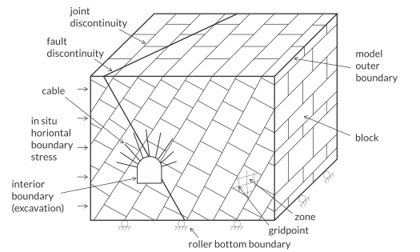

3DEC 基本操作
项目与文件
参阅项目（Projects）。
命令与 FISH
有关 3DEC 命令和 FISH 函数（块体、节理、块体网格单元等），请参阅3DEC 命令与 FISH（3DEC Commands and FISH）。有关 3DEC、FLAC3D 和 PFC 共用的命令与 FISH 函数（model 命令、program 命令、geometry 命令等），请参阅 i 通用模型对象（Common Model Objects）。
有关命令工作方式的信息（发出命令、命令语法、使用原则等），请参阅 i 命令的工作方式（How Commands Work）。有关 FISH 脚本语言的一般信息，请参阅 i 脚本（Scripting）部分中的 i FISH 脚本参考（FISH Scripting Reference）。
绘图与图形用户界面
有关绘图的完整信息，请参阅 i 绘图（Plotting）。该部分的信息适用于 3DEC、FLAC3D 和 PFC。
术语约定
3DEC 使用的术语大多与连续介质应力分析程序中的术语相似。此外，还使用一些专门术语描述 3DEC 模型的非连续介质特征。此处给出基本定义，以明确其含义。下图说明了 3DEC 中的术语。

图 1：3DEC 模型示例（未按比例绘制）
- 3DEC 模型
- 用户创建 3DEC 模型以模拟实际问题。提到 3DEC 模型时，我们指的是一系列 3DEC 命令（参阅3DEC 命令与 FISH（3DEC Commands and FISH）），这些命令定义了进行数值求解的问题条件。
- 块体
- 块体是离散单元计算的基本几何实体。创建 3DEC 模型时，可以将单个块体“切割”为许多较小块体，也可以创建独立块体后将它们连接起来。每个块体都是独立实体，可以与其他块体分离，也可以通过表面力与其他块体相互作用。块体也称为多面体。
- 接触
- 每个块体通过点接触与相邻块体连接。接触可以视为一种向各块体施加外力的边界条件。
- 子接触
- 无论是刚性块体还是可变形块体，每个接触均划分为若干子接触。块体间的相互作用力施加在子接触处。
- 不连续面
不连续面是将物质体分成独立部分的地质特征。例如，岩体中的节理、断层、裂隙及其他不连续特征均属于不连续面。
要在 3DEC 中表示某个不连续面，其迹长尺度必须与所分析工程结构的尺度大致处于同一数量级。3DEC 中的不连续面至少由块体间的一个接触定义。
- 网格单元
- 可变形块体由四面体有限差分网格单元组成。力学变化（例如应力和应变）在每个网格单元内计算。混合离散（m-d）网格单元是一类特殊单元，由两套相互叠加的子单元组成，每套包含五个四面体子单元。m-d 网格单元能够为块体塑性分析提供准确解。
- 网格点
- 网格点对应于四面体有限差分网格单元（或 m-d 网格单元的子单元）的顶点。每个网格单元始终对应四个网格点。每个网格点均赋予一组 x、y、z 坐标，从而确定有限差分网格单元的准确位置。网格点也称为节点。
- 模型边界
- 模型边界是 3DEC 模型的外围边界。内部边界（即模型内部的孔洞）也属于模型边界。
- 边界条件
- 边界条件是沿模型边界规定的约束或受控条件（例如力学问题中的固定位移或力）。
- 初始条件
- 初始条件是任何荷载变化或扰动（例如开挖）发生之前，模型中全部变量（例如应力）的状态。
- 空块体
- 空块体用于表示模型内部的空隙（即不存在材料）。在分析后续阶段，可以将空块体转为“实体”，例如用来模拟回填。（块体一旦从模型中删除，就无法恢复。）
- 块体本构模型
- 块体本构模型（或材料模型）表示赋予 3DEC 模型中可变形块体网格单元的变形与强度行为。3DEC 提供多种本构模型，以模拟地质材料常见的不同类型行为。
- 节理本构模型
- 节理本构模型表示块体在接触点（子接触点）处的法向和剪切相互作用。节理模型包含法向与剪切弹性刚度分量，以及极限剪切强度和抗拉强度分量。基本的节理模型是库仑滑移模型。
- 结构单元
- 结构单元是一维单元，用于表示结构（例如岩石锚杆或锚索）与岩体的相互作用。结构单元可以表现材料非线性。大应变计算形式还会产生几何非线性。
- 步
- 由于 3DEC 是显式程序，求解问题需要执行一定数量的计算步。在计算步进过程中，与研究现象有关的信息在模型的各块体之间传播。对于静力求解，需要一定步数才能达到平衡状态（或稳定流动状态）。典型问题通常在 2000 至 4000 步内求解完成，而大型复杂问题可能需要数万步才能达到稳定状态。使用动力分析选项时，执行计算时步命令（
model step） 执行计算时步（model cycle） 指动力问题的实际时间步。步也称为时间步或循环。 - 静力解
- 在 3DEC 中，当模型动能的变化率趋近于可忽略的数值时，即达到静力或准静力解。这通过对运动方程施加阻尼实现。在获得静力解时，模型可能处于力平衡状态；如果部分模型（或整个模型）在所施加的荷载条件下失稳（即破坏），则可能处于材料稳定流动状态。
- 不平衡力
- 不平衡力用于判定静力分析何时达到力学平衡状态（或何时开始发生节理滑移或塑性流动）。如果每个块体质心或网格点处的节点合力矢量均为零，则模型处于严格平衡状态。3DEC 监测最大的节点力矢量，并在调用 执行计算时步命令（
model step） 或 执行计算时步（model cycle） 命令时将其显示在屏幕上。最大的节点力矢量也称为“不平衡力”或“失衡力”。在数值分析中，最大不平衡力永远不会恰好达到零；当最大不平衡力相对于问题中的代表性力很小时，即认为模型处于平衡状态。如果不平衡力趋近于某一非零常数，则通常表明模型内部正在发生节理滑移，或块体破坏及塑性流动。 - 动力解
- 进行动力求解时，需要求解完整的动力运动方程（包括惯性项）；动能的产生与耗散直接影响求解结果。涉及高频、短历时荷载（例如地震荷载或爆炸荷载）的问题需要动力求解。动力计算是 3DEC 的可选模块（参阅 i 动力分析（:re:`dynamic_3dec`））。
- 顶点
- 此词专门用于描述刚性块体的角点。不过，在 3DEC 中，涉及块体表面的网格点时，顶点和网格点这两个词有时会互换使用。块体划分网格后，每个顶点均与一个网格点相连。
符号约定
单位制
参阅单位制（System of Units）主题。
| 这些内容对您有帮助吗？… | FLAC3D © 2019, Itasca | 原文更新于 2020 年 10 月 8 日 |